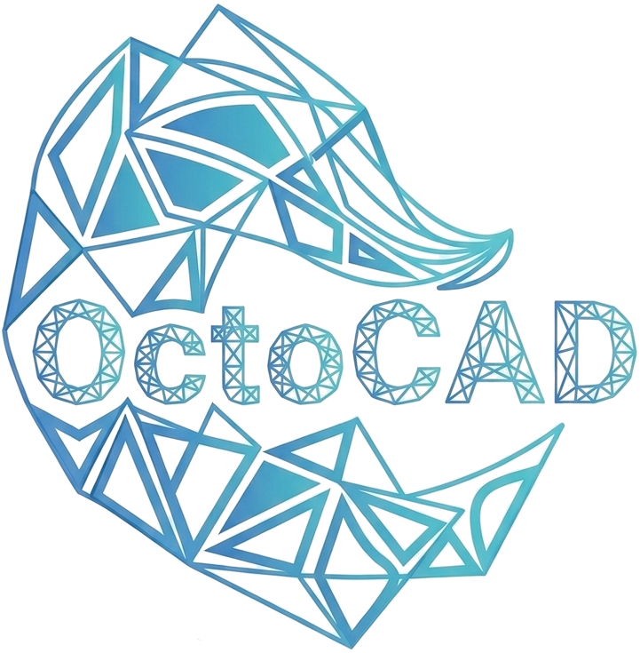

Industry 4.0 Integration
Our platforms are architected to interoperate with modern industrial systems and control networks, enabling real-time data acquisition, advanced analytics and informed operational decision making.

We develop software solutions for industrial systems and manufacturing automation, enabling organisations to integrate data-driven processes, improve operational reliability and scale complex engineering workflows.
Explore Our SolutionsOur platforms are architected to interoperate with modern industrial systems and control networks, enabling real-time data acquisition, advanced analytics and informed operational decision making.
We optimise design workflows, manufacturing processes, and operational systems through intelligent automation, reducing manual intervention, improving precision, and enabling scalable deployment across industrial infrastructure.
We apply advanced analytical methods to operational data to identify patterns, predict system behaviour, and optimise performance, enabling proactive maintenance and reduction of unplanned downtime.
We deliver reliable software for demanding industrial environments. Through direct client engagement, we build sustainable partnerships with continuous engineering support and seamless system interoperability.
We provide cutting-edge IT consultancy services, research and development capabilities, and infrastructure support for data-driven organizations. Our expertise spans data engineering, artificial intelligence, machine learning integration, and academic research support.
Our data engineering team designs and implements robust data pipelines, ETL processes, and data architecture solutions that enable organizations to harness the full potential of their data assets.
We specialize in integrating artificial intelligence and machine learning solutions into existing business processes, creating intelligent systems that drive innovation and competitive advantage.
Access our state-of-the-art research facilities and collaborate with our team of experts on cutting-edge projects that push the boundaries of technology and data science.
We provide mentorship, guidance, and infrastructure support to academic institutions and researchers, helping bridge the gap between theoretical research and practical implementation.

A parametric CAD customization software that automates the process of design and CAD modelling of machine elements.

A thermal design software for automation of thermal analysis and heat transfer optimisation in manufacturing systems.

A CAM solution for generating optimised tool paths and CNC machine codes for precision manufacturing operations.
We welcome inquiries regarding our industrial software solutions, engineering services, IT consultancy services, research collaborations, and academic support programs. Contact our team to discuss implementation, technical requirements, or partnership opportunities.
Explore our industrial automation platform through guided demonstrations tailored to your operational requirements.
Request a DemonstrationOur technical team provides consultation on system integration, implementation planning, and operational requirements.
Schedule ConsultationAccess our mentorship programs, research facilities, and infrastructure support for academic institutions.
Explore ResearchWe collaborate with systems integrators, technology partners and industry stakeholders to deliver solutions.
Explore Partnership